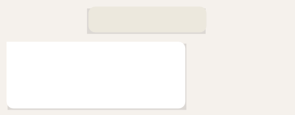

inmediato, porque ha configurado el WhatsApp para que sus mensajes suenen con un tono especial, solo de ella.
Se le alegra el corazón.
Ya está en la cama, enciende la luz de la mesa de noche y lee velozmente.

23:30, 21 de junio de 2030
FEDE
Hola, amigo. Llegué hace un rato.
Cuándo nos vemos?
Qué hiciste sin mí?
Clavado que te reaburriste